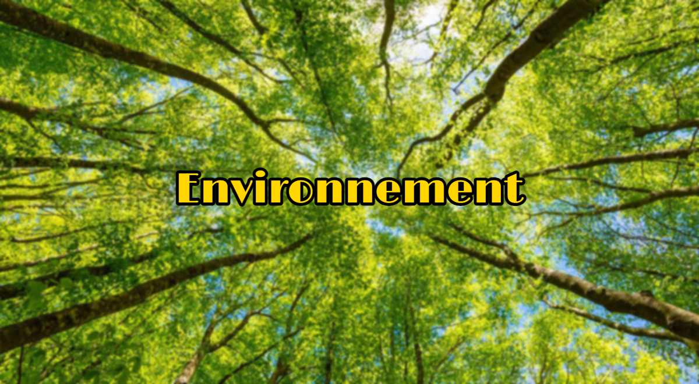
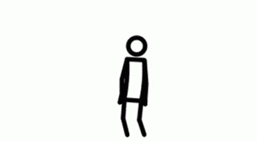

Quiz'Environnement
Voulez-vous connaître à quel évolution vous êtes de Bulbizarre ? Ce quiz est fait pour vous !
Le but de ce Quiz'Environnement est de connaitre l'étendue de vos connaissance sur l'environnement. Chaque niveau correspond à une évolution de Bulbizarre.
- Bulbizarre (Débutant):
Vous êtes la première évolution de Bulbizarre ! Nous allons vous donner quelques tips pour bien évoluer et avoir un impact positif sur l'environnement qui vous entoure.
Voici quelques tips qui vous aideront à évoluer :
- Récupérer l’eau de lavage des légumes/céréales/légumineuses/fruits : pour arroser les plantes, faire briller ses cheveux avec l’eau de trempage ou de cuisson du riz…
- Laver ses légumes/fruits dans un bac avec de l’eau (les laisser tremper pour que la terre se décolle plus facilement et les frotter dans leur eau) que vous récupérerez pour autre chose plutôt que laisser le robinet couler
- Récupérer l’eau froide de la douche (celle qui arrive avant l’eau chaude !) pour tirer la chasse, arroser les plantes, nettoyer son sol…
- Acheter une gourde (en inox ou en verre plutôt qu’en plastique !) plutôt que d’acheter des petites bouteilles en plastique à usage unique
- Eteindre la lumière lorsqu'on quitte une pièce et éteindre l'appareil éléctronique lorsqu'on ne l'utilise plus.
- Herbizarre (Intermédiaire):
Vous êtes la seconde évolution de Bulbizarre ! Vous avez conscience de l'impact de nos actions sur l'environnement et vous semblez faire des efforts pour y remédier... Nous allons vous donner quelques autres tips pour vous permettre d'évoluer davantage !
Voici quelques tips qui vous aideront à évoluer :
- Limiter sa consommation de viande. Un steak haché de 125g consomme 2400L d'eau.
- Privilégiez les transports « doux » : les transports en commun, le covoiturage, le vélo ou encore… la marche à pieds.
- Changer de fournisseur d'éléctricité. Il existe plusieurs offres labellisées « 100% renouvelable ».
- Récupérer l’eau de pluie si vous avez un jardin (avec un balcon ou une terrasse c’est plus risqué si ça déborde mais ce n’est pas impossible !) pour arroser ses plantes et son potager.
- Changer de banque, c'est écolo ! L'argent sur votre compte en banque est utilisé pour financer les projets de grandes entreprises qui ont des conséquences néfastes sur l'environnement.
Comment faire son composteur ? - Florizarre (Expert):
Vous êtes la dernière évolution de Bulbizarre ! Vous avez conscience de l'impact de nos actions sur l'environnement et vous faites de votre mieux pour y remédier... Nous allons vous donner quelques autres tips pour vous permettre d'évoluer le Bulbizarre de la société !
Voici quelques tips qui vous aideront à faire évoluer le monde :
- Rejoindre des associations. Cela à un impact significatif, vous transmettez vos connaissances et conseils qui pourront sensibiliser le monde !
- Sensibiliser vos proches.
- Participer à des actions dans votre ville et/ou région.
Faire du bénévolat !Associations
WWF France
Depuis 1973, le WWF France agit au quotidien afin d'offrir aux générations futures une planète vivante. Nous œuvrons pour mettre un frein à la dégradation de l'environnement et construire un avenir où les humains vivent en harmonie avec la nature.
Agir pour l'Environnement
Agir pour l'Environnement est une association de mobilisation citoyenne oeuvrant pour une planète vivable. L'association fait pression sur les responsables politiques et décideurs économiques en menant des campagnes réunissant un large réseau d'associations et de citoyens. Afin de garder intacte son indépendance d'action, l'association refuse tout financement issu des pouvoirs publics.
En savoir +350
350.org a été fondée en 2008 par un groupe d’étudiant.e.s américain.e.s avec l’appui de Bill McKibben, auteur de l’un des premiers ouvrages sur le réchauffement climatique destiné au grand public, dans le but de créer un mouvement d’action mondiale pour le climat. Le nom de l’organisation est issu de la concentration de dioxyde de carbone à ne pas dépasser dans l’atmosphère pour garantir la sécurité climatique, à savoir 350 parties par million.
En savoir +